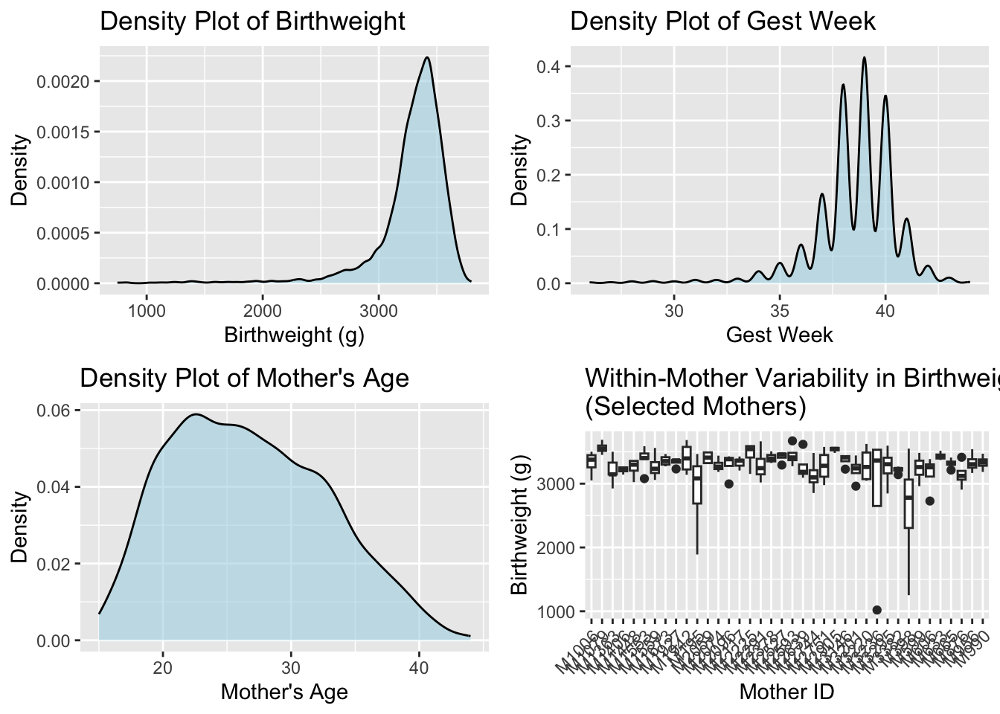
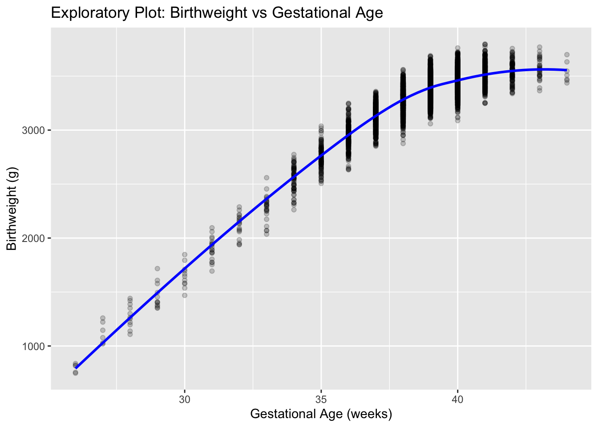
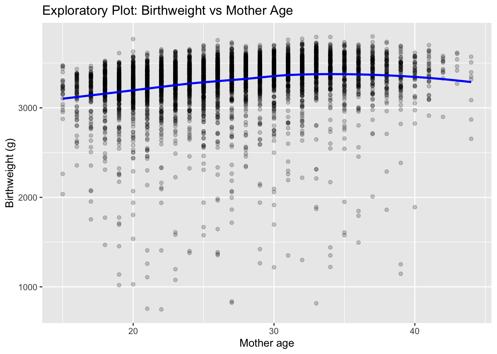

Module 6 Model Selection, Diagnostics, & Regression Workflow
Objective
After completing this module, students will be able to (1) define an estimand clearly, (2) identify dependence structures in clustered data, (3) fit and diagnose linear mixed models, (4) identify nonlinearity and incorporate spline smooths, (5) use diagnostics to guide model refinement, and (6) produce a complete model-building workflow and final report.
Motivation and Examples
Motivation
Why develop a workflow?
Modules 1–5 introduced the major families of regression models—linear models, generalized linear models, mixed models, GEEs, splines, and GAMs. Each module focused on one modeling framework at a time. But real statistical analysis does not proceed one module at a time.
In real applications, analysts begin with a scientific question, explore the data, build an initial model, diagnose its limitations, and then iteratively refine the model until they reach a defensible, interpretable representation of the data-generating process.
This requires a workflow—a structured sequence of decisions that guides model building, model checking, and model improvement.
A workflow answers the following questions:
What we are trying to estimate?
Why we chose a particular modeling strategy?
How we checked whether that strategy was reasonable?
How we refined the model when diagnostics suggested problems?
How we visualized and communicated the final result?
The best guiding principle is simple but powerful:
Start with the simplest plausible model and build complexity only as needed.
To ground the workflow in a concrete setting, we turn to a more realistic dataset drawn from gestational-age birth records. The dataset includes:
gw: gestational age (weeks),
age: maternal age at delivery (years),
bw: birthweight (grams).
child_id: Infant unique id.
mother_id: Mother unique id.
These variables allow us to examine clinically relevant relationships between maternal characteristics and neonatal outcomes.
Before touching a model, we need to get clarity on the estimand: what quantity we ultimately want to estimate (what is the scientific question we want to answer?)
The Estimand
Before fitting any model, we must define the estimand—the target quantity we aim to learn from the data. The estimand is not the model and not the estimator; it is the underlying population quantity that our chosen method will approximate.
Different modeling strategies—ordinary least squares, spline-based GAMs, linear mixed models, or GEEs—can all be viewed as alternative approaches to estimating the same function \(m(gw,age) = E[bw|age, gw]\) under different assumptions about linearity, smoothness, and correlation.
Being explicit about the estimand serves several purposes. It clarifies which variables must enter the model as predictors or adjustment factors, keeps the scientific question distinct from the modeling tools we use, and provides a stable reference point as we progress from simpler to more flexible models.
In the workflow that follows, every modeling decision—choice of link, inclusion of random effects, introduction of splines or tensor-product smooths—will be justified in terms of how well the resulting model approximates this estimand, i.e., the conditional mean function.
Why Defining the Estimand Matters
A clearly stated estimand serves several purposes:
It guides the choice of modeling strategy. Once the estimand is defined, the set of appropriate models becomes clear. If the goal is the conditional mean, linear or generalized linear models are natural starting points. If the goal shifts to conditional quantiles, the entire modeling framework changes.
It determines which covariates must be included. The estimand dictates the role of each variable—whether maternal age, for example, should be treated as an adjustment factor, a confounder, or a predictor of primary scientific interest.
It provides a stable reference point across modeling approaches. Different estimators (e.g., OLS, GAMs, or LMMs) may be used to approximate the relationship, but the underlying estimand remains fixed. This allows the analyst to compare models and refine the specification without losing sight of the scientific target.
Common Pitfalls
Confusing the estimand with the estimator. “We want to fit a GAM” is not a scientific question; it is a modeling choice. The estimand must be defined before selecting a model.
Defining the estimand after examining the data. Allowing the data to determine the estimand blurs the boundary between inference and exploration.
Using an estimand that is too vague. Statements such as “We want to understand the effect of gestational age” are incomplete unless the scale, population, and conditioning variables are specified.
The estimand does not change regardless of model approach; only the estimator changes.
Definition of the Estimand (Our Example)
In our example, we are interested in how infant birthweight varies with gestational age and maternal age. A natural target is the conditional mean birthweight as a function of these predictors. Here we define \(m(.)\) as
\[
m(gw,age)=E[bw∣gw,age],
\]
which describes how expected birthweight changes across gestational age while holding maternal age fixed (or vice versa).
This estimand is population-level: it represents the mean birthweight in the target population of births, not the average birthweight within a given mother.
2. Data Structure
With the estimand defined, the next step is to understand the structure of the data that will inform it. Exploratory Data Analysis (EDA) serves two purposes:
To learn how the observed data relate to the estimand, and
To diagnose the modeling challenges that will arise later
(nonlinearity, skewness, clustering, outliers, heteroskedasticity, etc.).
EDA is not a formal model, but it shapes every modeling decision that follows.
Independent Structure?
Are the observations independent?
If multiple infants share the same mother, then the birthweights of siblings may be correlated due to genetics, shared environment, or maternal health factors. Independence assumptions underlying OLS or GLM may therefore be violated. Before choosing any model, we inspect how the data are organized.
This simple summary helps determine whether we should consider mixed models (Module 1), GEEs (Module 3), or survey-type adjustments.
gabirths %>%dplyr::count(mother_id, name ="n_children") %>%dplyr::arrange(desc(n_children)) %>%head()
This summary shows that some mothers contribute multiple infants to the dataset. The number of infants per mother ranges from 1 to 5, meaning the data consist of clusters of varying sizes. If we treat each mother as a cluster, the observations are nested within mothers with unequal cluster sizes.
Marginal Distributions
To understand the estimand \(m(gw, age)\), we first look at the marginal behavior of its components. Birthweight often exhibits right skew, while gestational age may show natural bounds (e.g., preterm < 37 weeks). Maternal age typically spans a broad range and may have nonlinear associations with outcome.
Understanding these shapes helps anticipate whether:
linearity assumptions will hold,
transformations may be needed, or
smooth functions (splines/GAMs) are appropriate.
bw gw age
Min. : 748 Min. :26.00 Min. :15.00
1st Qu.:3210 1st Qu.:38.00 1st Qu.:22.00
Median :3353 Median :39.00 Median :26.00
Mean :3289 Mean :38.55 Mean :26.73
3rd Qu.:3466 3rd Qu.:40.00 3rd Qu.:31.00
Max. :3798 Max. :44.00 Max. :44.00

We can illustrate densities of the outcome and covariate variables both overall and within groups. These can give us a sense of the outcome density as well as dispersion.
Interpretation of Marginal Distributions
The summary statistics provide an initial sense of the scale, variability, and clinical plausibility of each variable:
Birthweight (bw) ranges from 748 g to 3798 g, with a mean of about 3289 g.
The lower tail reflects preterm or growth-restricted infants, while the upper tail reflects large-for-gestational-age infants. The interquartile range (3210–3466 g) covers healthy term births.
Gestational age (gw) spans 26 to 44 weeks, with a median of 39 weeks.
Values below 37 weeks correspond to preterm births, and the distribution is strongly right-skewed toward full-term deliveries, as expected in population-level data.
Maternal age (age) ranges from 15 to 44 years, with a median of 26.
The wide spread suggests that maternal age may contribute both linear and nonlinear variation in birth outcomes.
The within-mother boxplots reveal substantial between-mother heterogeneity in baseline infant birthweight and some variability in spread.
These features motivate a workflow in which we begin with simple models and then examine whether nonlinear terms or smoothing functions are needed to accurately estimate the estimand.
Exploring Associations
Before specifying a model, we examine the bivariate relationships among birthweight, gestational age, and maternal age. This helps us judge linearity, detect nonlinear patterns, and understand how the predictors relate to the outcome at a population level.


Interpretation: The LOESS smoother clearly shows steep growth in early gestational ages with a leveling off around 38–40 weeks, a pattern that linear terms cannot capture. There is a more linear trend between age and bw. This motivates our plan to include smooth functions later.
Build an Analysis Plan
With the estimand clarified and the data structure understood, the next step is to build an analysis plan—a short, principled outline of how we intend to estimate
\[
m(gw, age) = E[bw|gw, age]
\]
An analysis plan is not the model itself. It is a blueprint that anticipates likely modeling challenges and provides a rationale for where to begin and how to proceed if the initial model is inadequate.
The plan should answer four questions:
What model family is appropriate for the outcome?
Do we expect linearity, or should we plan for flexible nonlinear effects?
Are the observations independent? If not, how should we handle correlation?
What diagnostics will determine whether we need more complexity?
1. Choosing the baseline model
Birthweight is continuous and measured in grams. Although reasonably well behaved for most term infants, its distribution is clearly right-skewed with heavier lower tails due to preterm and growth-restricted births.
Thus, a Gaussian working model is a reasonable starting point for the conditional mean, even if residuals later suggest refinements.
We know that there are repeated children within mother. We have learned that ignoring this clustering results in invalid inference. Our initial model needs to respect the structure of the data, which is not independent.
Based on these two conditions, we have multiple model options that capture the estimand of interest:
A natural baseline is a LMM in which we model birthweight for child \(i\) with a random intercept for mother \(j\):
This model targets the same population-level estimand but does so while properly accounting for the non-independence of infants within mothers. It is intentionally simple and serves as a baseline against which more flexible models can be compared.
Another option is GEE which also accounts for within-mother correlation but only models population-level associations and not subject-specific effects. GEE requires specifying a working correlation structure (e.g., exchangeable), although inference remains valid even if this structure is misspecified.
- Random effects are correctly specified (typically normal). - Covariance structure must be correctly specified for full efficiency.
- Most efficient if the model is correctly specified. - Provides BLUPs for each mother. - Sensitive to covariance misspecification.
GEE
- Does not require assumptions about random‐effects distribution. - Requires a working correlation structure (e.g., exchangeable).
- Sandwich (robust) SEs protect against misspecification. - Population‐level interpretation unaffected by random‐effects assumptions. - Reliable even if the working correlation is incorrect.
So how do we choose between them?
LMM is preferred when we want to model the clustering explicitly, estimate variance components, or examine how much mothers differ from one another. Subject-specific effects.
GEE is preferred when we want robust population-average effects and are less concerned with modeling the random-effects structure. Population level associations only.
In linear models with an identity link, the fixed-effect estimates from LMM and GEE are usually very similar; they differ mainly in how they treat correlation and what additional quantities they provide.
Here we use the LMM as the baseline model because it respects clustering and provides useful diagnostics (e.g., BLUPs, ICC), while still targeting the same population-level estimand as a GEE.
2. Anticipating nonlinearity
EDA indicates that:
the relationship between gestational age and birthweight is strongly nonlinear, especially around the late-preterm and early-term range;
maternal age may have a weak or nonlinear association with birthweight.
If linearity assumptions fail (which they will), we will introduce spline-based smooths for \(gw\) and if needed for \(age\)using a GAM model. Specifically, we will incorporate penalized b-splines using the default number of knots \((k=10)\) for initial assessment.
Why penalized splines?
Although many spline bases can be used to model nonlinear relationships, penalized splines offer a principled and practical balance of flexibility and control. In practice, analysts may choose among:
Truncated power basis splines: Flexible but highly sensitive to knot placement; prone to overfitting unless carefully tuned.
Cubic B-splines: Smooth and stable, but still require explicit decisions about the number and location of knots and do not include automatic smoothing.
Penalized splines: Use a moderately large basis and a smoothing penalty selected automatically by REML or GCV. These are robust, interpretable, and require minimal manual tuning.
For this module, we use penalized splines because they provide automatic control of smoothness, integrate naturally with diagnostic tools (such as the k-index), and offer a modern, reproducible approach to modeling nonlinear effects.
Note: Both LMM and GEE can accommodate splines:
In LMM, spline bases (e.g., truncated power basis or B-splines) enter as additional fixed-effect columns in the design matrix \(X\), optionally with random-coefficient penalties (linking back to penalized splines in Module 4).
In GEE, we can use the same spline basis functions as predictors in the marginal mean, and then estimate \(\beta\) and robust SEs with a working correlation.
3. Pre-specifying diagnostics
An analysis plan should not only say what we will fit, but also how we will decide whether each model in the workflow is adequate. Because we have pre-specified a two-step modeling strategy
Baseline LMM with linear effects of gw and age and a random intercept for mother_id;
Extended LMM that replaces the linear term in gw with a penalized B-spline,
Our diagnostics will also be organized in two phases.
After fitting this model with lmer(), we will perform three focused checks.
Mean-structure diagnostics: We will examine residuals versus fitted values and residuals versus the key predictors:
residuals vs. fitted values,
residuals vs. gw,
residuals vs. age.
Decision Rule: If we see clear nonlinear structure with respect to gw, we proceed to Phase 2 and replace the linear term in gw by a cubic B-spline in the LMM.
Distributional diagnostics for residuals.
We will check approximate normality of the level-1 errors using a QQ plot of residuals. Moderate deviations are acceptable, since the Gaussian model is being used as a working model for the mean. (However, very heavy tails or extreme asymmetry may indicate that a transformation of bw or a more robust modeling approach is needed.)
At this stage, our primary concern is whether the residuals are sufficiently well-behaved for standard LMM inference to be reliable.
Random-effects diagnostics.
Because the correlation among siblings is captured by the mother-level random intercepts, we will inspect the empirical distribution of the BLUPs \(\hat\theta_j\):
histogram and Q–Q plot of \(\hat\theta_j\) against a normal distribution,
summary of the estimated variance component \(\hat\tau^2\) and the implied intraclass correlation (ICC).
Decision rule:
If residuals vs gw show curvature → add spline.
If BLUPs wildly non-normal → flag for sensitivity, but continue.
Phase 2: Diagnostics after adding a penalized B-spline for gestational week
If Phase 1 diagnostics indicate substantial nonlinearity in gw, we extend the baseline LMM to
where \(f(\cdot)\) is modeled via a penalized spline basis for gestational week.
After fitting this spline-augmented LMM, the diagnostics focus on whether the spline has successfully captured the nonlinear pattern without overfitting.
Visualizing the fitted smooth.
We will plot the estimated mean birthweight curve across gw (holding age at a representative value), overlaid with the observed data summarized in bins of gestational age (e.g., mean bw within 1-week bins).
Questions we ask:
Does the spline fit capture the clinically plausible shape (e.g., steep growth at earlier weeks, flattening near term)?
Does it remove the systematic residual patterns we saw in Phase 1?
Residual diagnostics revisited. We repeat the key residual plots from Phase 1:
residuals vs. fitted values,
residuals vs. gw,
residuals vs. age,
Q–Q plot of residuals.
Decision rule:
If residuals vs. gw now show no strong curvature and the spread is roughly constant across gw, we conclude that the spline has successfully captured the main nonlinear structure in gestational age.
If substantial structure remains, we may consider increasing the flexibility of the spline (e.g., more internal knots) or, if the pattern appears to be driven by a small number of very preterm or very post-term births, conducting sensitivity analyses with those observations removed.
3.Basis-dimension adequacy (K-index)
When using spline bases (as in mgcv::gam()), the k-index provides a formal check of whether the chosen basis dimension k was large enough to capture the underlying nonlinear pattern.
A k-index close to 1 with a non-significant p-value indicates that the basis dimension was adequate.
A k-index substantially less than 1 with a small p-value suggests that k was too small and additional flexibility is needed (e.g., increase k or add knots).
Phase 3: Model comparison and sensitivity checks
Once both the linear LMM and the penalized-spline GAM have been fitted and diagnosed, we will compare them using cross-validation error. Note: AIC is not appropriate here because of different smoothing functions.
The final model choice (which version we present in plots and write-up) will be based on two criteria:
It provides a better approximation to the estimand \(m(gw, age)\), as judged by diagnostics;
It remains interpretable and consistent with clinical knowledge about how birthweight should change with gestational age and maternal age.
Workflow Summary: Model-Building Algorithm
This module follows a two-stage model-building workflow driven by pre-specified diagnostics.
All steps are anchored to the estimand
Plot the estimated smooth ( f(gw) )
• Should match the clinical growth profile (steep early growth, flattening near term).
• Overlay with binned means to confirm plausibility.
Residuals vs. gw
• Should now be flat (no curvature).
Residuals vs. fitted
• Should be roughly homoskedastic.
Q–Q plot
• Should show improvement or remain similar to Phase 1.
Random-effects BLUPs
• Should not reveal new structure; distribution should remain roughly normal.
Criteria for Accepting the Spline LMM
Choose the spline-augmented model if:
it removes nonlinear patterns in residuals,
it gives a clinically plausible smooth curve across gestational age,
cross-validation error shows improvement.
If the spline adds complexity without improving diagnostics or interpretability, prefer the simpler linear LMM.
4. Final Deliverables
At the end of the workflow, the work should culminate in a set of clearly presented, reproducible deliverables that summarize
the modeling decisions made,
the diagnostic evidence supporting those decisions, and
the final estimated relationship between birthweight, gestational age, and maternal age.
These deliverables serve both as a scientific summary and as documentation of a transparent, principled model-building process.
1. A clearly stated estimand
A concise restatement of the target quantity: \(m(gw, age) = E[bw \mid gw, age]\). Explain why this estimand is population-level, how it relates to the scientific question, and how the final model approximates it.
2. A summary of the modeling workflow and decision points
Provide a brief narrative describing:
the baseline linear LMM,
the diagnostics performed,
the specific diagnostic patterns that motivated the spline extension (if used),
why the final model was selected over alternatives.
This should read as a short justification of your modeling path, not as a list of R commands.
3. The final fitted model
Present the final selected model in both:
statistical form (equation), and
computational form (the final R call to lmer()).
Include estimated coefficients for fixed effects, the estimated spline function (if applicable), and the variance component for the random intercept.
4. Visualizations of the estimated mean structure
Provide the primary visualization(s) that communicate the results:
The fitted birthweight–gestational age curve \(\hat{m}(gw, age_0)\) at a representative value of maternal age.
If splines are used, a smoothed curve with pointwise confidence bands.
Optional: overlaid binned means of the raw data for interpretability.
These plots demonstrate how the model captures nonlinear growth patterns across gestational age.
5. Key diagnostic plots for the final model
Include the essential diagnostic figures that verify the adequacy of the chosen model:
residuals vs. fitted values,
residuals vs. gestational age,
Q–Q plot of residuals,
distribution of random-intercept BLUPs.
These confirm that the final model appropriately captures the mean structure and dependence.
6. Interpretation of substantive effects
A brief textual interpretation connecting results to the scientific question. Examples:
How birthweight increases across gestational age and where the curve flattens.
The estimated population-level effect of maternal age.
The estimated between-mother variability (ICC or random-effect variance).
7. Reproducible appendix: Full R Workflow
Include a compact, end-to-end R script that reproduces:
data preparation,
EDA summaries and plots,
baseline LMM,
spline extension (if used),
diagnostics,
final plots.
This appendix ensures transparency and reproducibility without disrupting the narrative in the main text.
Together, these deliverables provide a complete and rigorously justified estimation of \(m(gw, age) = E[bw \mid gw, age]\) demonstrating a full regression workflow from estimand definition to final communication.